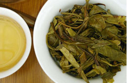

Company Profile
Pinming Tea Industry Co., Ltd. (hereinafter referred to as "Pinming") is a professional supplier of high-quality tea products and related services, officially established in February 2012. Its operating headquarters are located in Hefei, Anhui Province, with the production and operation of the "Pinming Tea" series of tea products as its core. The current coverage of tea categories includes: authentic Anhui Qimen black tea series from the origin, boutique Pu'er tea series represented by Yiwu tea region in Yunnan, and boutique white tea series represented by Fuding tea region in Fujian.
The core development strategy of the tea industry lies in market orientation, industrialization as the foundation, research and development as the support, and capital as the means. Through the formation of value chain alliances, professional operations, and the focus on maximizing the common value of customers, shareholders, and employees, we are committed to becoming a leading enterprise in the Chinese tea industry with a wide coverage channel system and well-known brands.
At present, the Tea Industry includes member enterprises such as Qihong Tea Industry Co., Ltd. in Qimen County, Anhui Province, and Shenyi Tea Industry Co., Ltd. in Xishuangbanna, and has invested in the establishment of the Anhui Qihong Museum. In Qimen, Anhui and Yiwu, Yunnan, we will vigorously build ecological tea garden bases and extensively occupy high-quality raw material resources in core production areas; By building clean and modern production, processing, and research and development centers from a high starting point, we aim to establish a benchmark for regional tea production scale and standards; Through the complete inheritance of historical craftsmanship and the display and protection system of intangible cultural heritage, we promote the essence of traditional handmade craftsmanship and the rich historical and cultural heritage of Qimen black tea and Yunnan Pu'er tea.
Product
- 
-

-